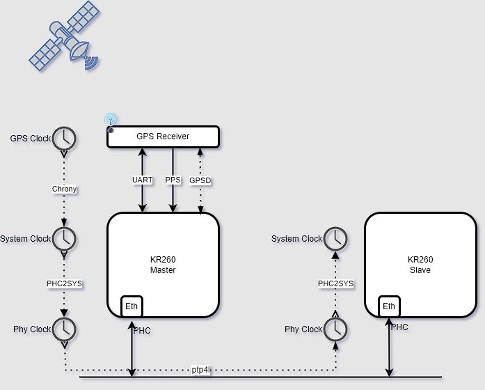

Precision time Management¶
Overview¶
GPS-1588-PTP Application is built on KR260 Robotics starter kit, to Synchronize the linux platform System Time with GPS Time and distribute the system time to another KR260 board using linux PTP tools. The application uses ubuntu daemons gpsd, chrony and linux ptp utilities.
The below figure shows the architecture of the Application.
This Application uses two KR260 Robotics starter kits for master and slave communication. Digilent pmod-gps receiver is connected to the master board. The master board captures the gps data which is in NMEA format through uart lite interface and one pps input through GPIO for system time correction .
Features¶
GPS-1588-PTP application Synchronizes the SOM embedded platform system time with GPS time.
Demonstrate 1588 Precision time protocol(ptp) time synchronization between master and multiple slaves .
Demonstrate time synchronization using ubuntu daemons (gpsd ,chrony) and linuxptp utilities(phc2sys,ptp4l).
Precision time Management uses 1 PPS output from pmod-gps receiver.
Tutorials¶
Please first review the FAQ for commonly encountered issues across Kria SOM applications.
Architecture¶
Xilinx Support¶
GitHub issues will be used for tracking requests and bugs. For questions, go to forums.xilinx.com.
Copyright (C) 2023 Advanced Micro Devices,Inc.